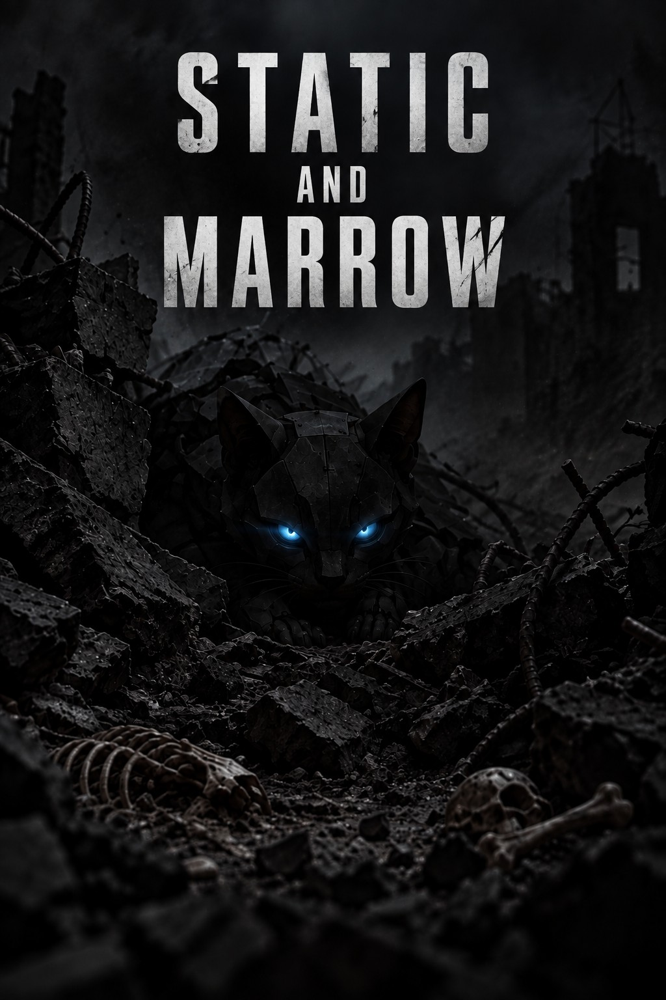

Static and Marrow
The world ended. The machines kept thinking. What's left of humanity is learning to live in the space between static and marrow.

Available on Amazon
About the Author
Growing up on the Terminator movies, the wasteland of Mad Max, and the quiet bleakness of A Boy and His Dog, I've always been drawn to worlds that have broken and kept going anyway. Static and Marrow grew out of that same fascination: what's left of us, and what's left in charge, after everything falls apart.